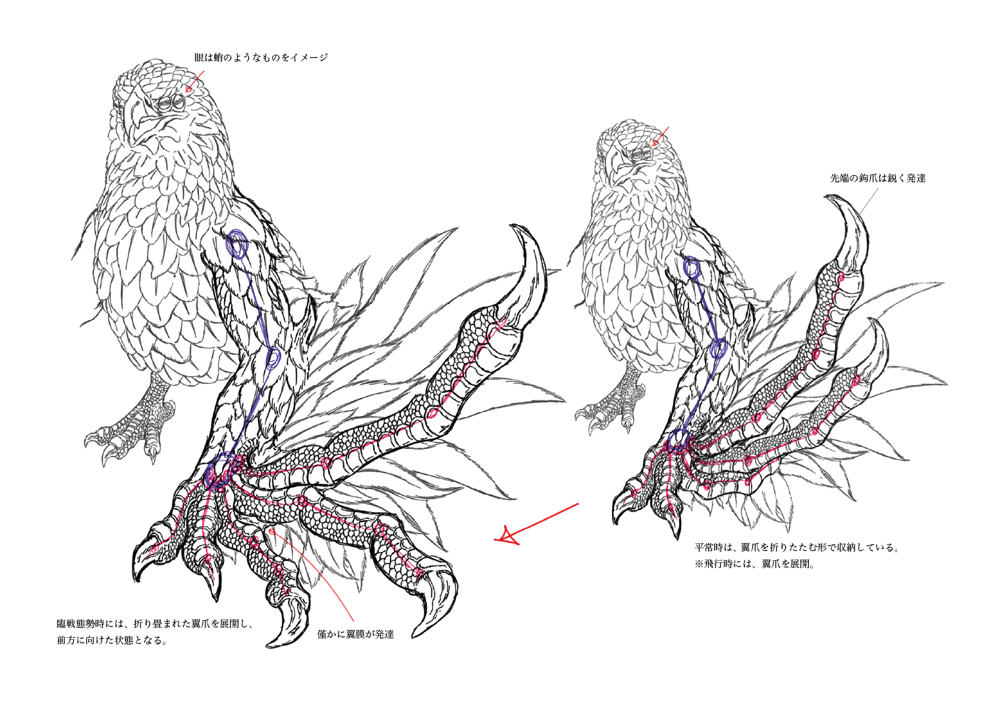
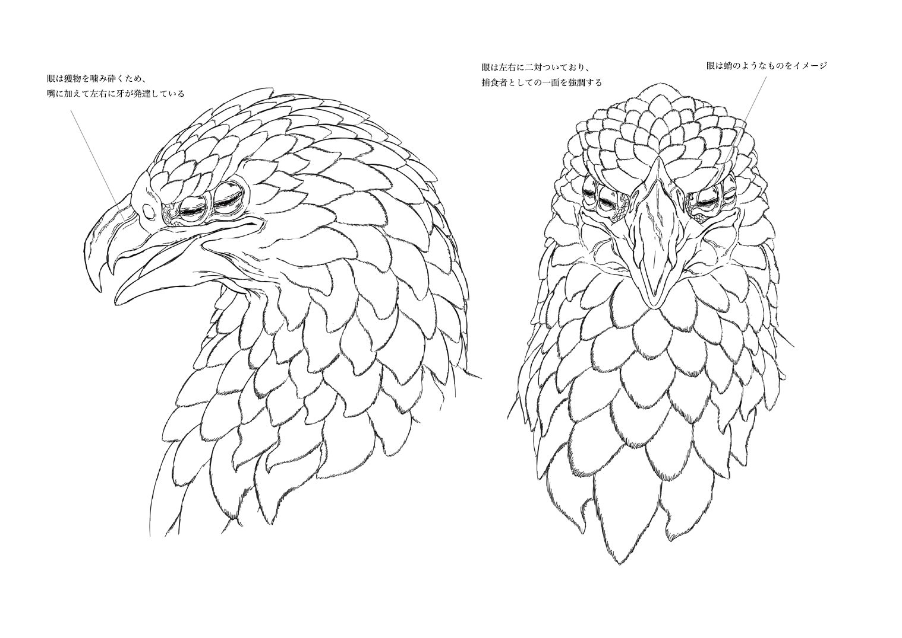

「 Eagle Wyvern 」
Concept & Idea
既存の鷲をベースに、鷲の"生態系の頂点"という印象を強調するとともに、
竜のような進化の道を歩んだ姿にデザインすることがコンセプトであった。
そのため、翼などの一部部位は元の鷲の部位の構造を参考にしつつ、一から構築した。
以下は部位毎のデザイン考案のスケッチである。

先端に鉤爪を持つ翼爪は、長く鋭利に発達している。
収納時と展開時でこの生物の持つ印象・シルエットが大きく変わるよう設計した。
また、捕食時にも役に立つというこのクリーチャーが生活する上で、どのようにその部位を
利用していたのかまで、細かく設定している。

基本的な形状は既存の鷲とはあまり変化していないが、嘴には獲物を噛み砕くための
牙が発達している。さらに、眼は左右に二対付いていており、「生態系の頂点」という
捕食者としての一面を強調する。
それだけでなく、蛸のような瞳孔を有していることで外敵に心を読ませない不気味さを
も同時に演出している。「生態系の頂点」はその生息域内で絶対的な存在であり、
それを揺るがすものがいないほどに強靭な生物であることを意識した上、デザインした。
ホームへ戻る